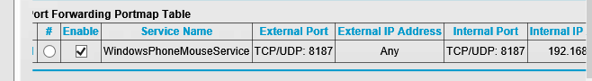
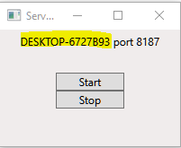
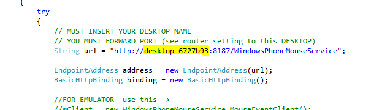
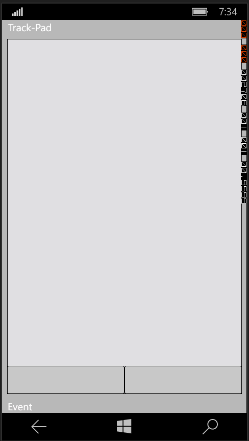

Realized idea how to use windows phone as trackpad .
WCF – Mouse hosted service was realized with WPF F# - project “WpfMouseHostService”
"Windows Phone" project is “WindowsPhoneAsTrackpad”
Bring solution and Run as Administrator.
Description
RUN first project “WpfMouseHostService” (You can separate this solution on two independent solutions ) and [start]
[Start] hosted sevice.
So as this project control mouse you must deploy second project on device.
Before RUN windows project you MUST forward (use router) port 8187 to your PC (you can change it).

Before RUN (deploy) windows phone project please replace in string URL
to your computer descktop NAME (You can find it in Control Panel -> System ...) or run host service application and

And replace below name on your name ... line 174 MainPage.xml.cs

Now You can deploy WP application on your phone and use it.
When you run project

This project support multitouch points.
one - move cursor
two - wheel
three - left pressed an move ...
All multitouch logic was realizes by TouchPointCollection class.
DO NOT USE hold, click, DoubleClick, tap events ...
Good luck.
<UserControl
xmlns="http://schemas.microsoft.com/winfx/2006/xaml/presentation"
xmlns:x="http://schemas.microsoft.com/winfx/2006/xaml"
xmlns:mc="http://schemas.openxmlformats.org/markup-compatibility/2006"
xmlns:d="http://schemas.microsoft.com/expression/blend/2008"
Height="130" Width="200.0" >
<Grid x:Name="grid" Focusable="True" Background="#FFF0ECEC" >
<Button x:Name="btnStart" Content="Start" HorizontalAlignment="Center" VerticalAlignment="Center" Width="76" Background="#FFDEDDDD" Margin="62,48,62,62" />
<Button x:Name="btnStop" Content="Stop" HorizontalAlignment="Center" VerticalAlignment="Center" Width="76" Background="#FFDEDDDD" Margin="62,68,62,42"/>
<Label x:Name="lblMachineName" Content="Desktop Name" VerticalAlignment="Top" HorizontalAlignment="Center"/>
</Grid>
</UserControl>
namespace WCFhostByWpfFsharpOnly open System open System.ServiceModel open System.ServiceModel.Description open System.Windows.Controls open System.IO open System.Windows.Markup open System.Reflection open Utilities open Microsoft.FSharp.Control open System.Windows open System.Windows.Input type WpfMouse() as this = inherit UserControl() // XAML - MUST be Embedded Resource let mySr = new StreamReader(Assembly.Load("WCFhostByWpfFsharpOnly").GetManifestResourceStream("WpfMouse.xaml")) do this.Content <- XamlReader.Load(mySr.BaseStream):?> UserControl let mutable btnStart : Button = this.Content?btnStart let mutable btnStop : Button = this.Content?btnStop let mutable lblMachineName : Label = this.Content?lblMachineName let mutable host : ServiceHost = null let startServer() = let baseAddress = new Uri("http://localhost:8187/WindowsPhoneMouseService") //8187 WindowsPhoneMouseService - will be used in WindowsPhone Project do host <- new ServiceHost(typeof<MouseEvent>, [|baseAddress|]) do host.Description.Behaviors.Add(new ServiceMetadataBehavior(HttpGetEnabled = true)) do host.AddServiceEndpoint(typeof<IMouseEvent>, new BasicHttpBinding(), baseAddress) |> ignore try do host.Open() do btnStart.IsEnabled <- false with | _ -> MessageBox.Show("You Must Run Application as Administrator.") |> ignore do lblMachineName.Content <- System.Environment.MachineName + " port 8187" do btnStart.Click.Add(fun _ -> do startServer()) do btnStop.Click.Add(fun _ -> if not (isNull host) && not btnStart.IsEnabled then do host.Close() // host MUST be opened ! do Environment.Exit(0)) //// For TEST only by Keys ... Comment out if needed - ALL BELOW... //// See also one line in App.fs (see App.fs) // // let MOUSEEVENTF_ABSOLUTE = 0x8000 // let MOUSEEVENTF_LEFTDOWN = 0x0002 // let MOUSEEVENTF_LEFTUP = 0x0004 // let MOUSEEVENTF_MIDDLEDOWN = 0x0020 // let MOUSEEVENTF_MIDDLEUP = 0x0040 // let MOUSEEVENTF_MOVE = 0x0001 // let MOUSEEVENTF_RIGHTDOWN = 0x0008 // let MOUSEEVENTF_RIGHTUP = 0x0010 // let MOUSEEVENTF_XDOWN = 0x0080 // let MOUSEEVENTF_XUP = 0x0100 // let MOUSEEVENTF_WHEEL = 0x0800 // let MOUSEEVENTF_HWHEEL = 0x01000 // // let moveCusore(direction : string) = // let mutable x = 0 // let mutable y = 0 // let mutable action = 0 // // match direction with // | "Up" -> action <- MOUSEEVENTF_MOVE // y <- -3 // x <- 0 // Imported.mouse_event(action, x, y, 0, 0); // // | "Down" -> action <- MOUSEEVENTF_MOVE // y <- +3 // x <- 0 // Imported.mouse_event( action, x, y, 0, 0); // // | "Left" -> action <- MOUSEEVENTF_MOVE // y <- 0 // x <- -3 // Imported.mouse_event( action, x, y, 0, 0); // // | "Right" -> action <- MOUSEEVENTF_MOVE // y <- 0 // x <- +3 // Imported.mouse_event( action, x, y, 0, 0); // // | "L" -> Imported.mouse_event( MOUSEEVENTF_LEFTDOWN , 0, 0, 0, 0) // System.Threading.Thread.Sleep(100) // Imported.mouse_event( MOUSEEVENTF_LEFTUP, 0, 0, 0, 0) // // | "R" -> Imported.mouse_event( MOUSEEVENTF_RIGHTDOWN, 0, 0, 0, 0) // System.Threading.Thread.Sleep(100) // Imported.mouse_event( MOUSEEVENTF_RIGHTUP, 0, 0, 0, 0) // // | _ -> ignore() // // // let keyDown (e : KeyEventArgs) = // do e.Handled <- true // match e.Key with // | Key.Down -> moveCusore("Down") // | Key.Up -> moveCusore("Up") // | Key.Left -> moveCusore("Left") // | Key.Right-> moveCusore("Right") // | Key.L -> moveCusore("L") // | Key.R -> moveCusore("R") // | _ -> ignore() // // // member x.UserKeyDown(e : KeyEventArgs) = keyDown (e)
using System; using System.Collections.Generic; using System.Linq; using System.Net; using System.Windows; using System.Windows.Controls; using System.Windows.Navigation; using System.Threading; using Microsoft.Phone.Controls; using Microsoft.Phone.Shell; using System.Windows.Input; using System.ServiceModel; using System.ServiceModel.Description; using Windows.Web.Http; namespace TrackPadSilverlight { public partial class MainPage : PhoneApplicationPage { Int32 MOUSEEVENTF_ABSOLUTE = 0x8000; Int32 MOUSEEVENTF_LEFTDOWN = 0x0002; Int32 MOUSEEVENTF_LEFTUP = 0x0004; Int32 MOUSEEVENTF_MIDDLEDOWN = 0x0020; Int32 MOUSEEVENTF_MIDDLEUP = 0x0040; Int32 MOUSEEVENTF_MOVE = 0x0001; Int32 MOUSEEVENTF_RIGHTDOWN = 0x0008; Int32 MOUSEEVENTF_RIGHTUP = 0x0010; Int32 MOUSEEVENTF_XDOWN = 0x0080; Int32 MOUSEEVENTF_XUP = 0x0100; Int32 MOUSEEVENTF_WHEEL = 0x0800; Int32 MOUSEEVENTF_HWHEEL = 0x01000; // Common Values Point lastTouchedPoint0 = new Point(0, 0); WindowsPhoneMouseService.MouseEventClient mClient; public MainPage() { InitializeComponent(); Touch.FrameReported += Touch_FrameReported; } private double deltaX = 0.0; private double deltaY = 0.0; private bool blnWas2or3 = false; void Touch_FrameReported(object sender, TouchFrameEventArgs e) { TouchPointCollection touchPoints = e.GetTouchPoints(rectPad); if (touchPoints.Count == 1 && blnWas2or3==false) { if (touchPoints[0].Position.Y > rectPad.ActualHeight - 55) { if (touchPoints[0].Position.X < this.ActualWidth * 0.5) { txtTap.Text = " Left Button Click."; if (touchPoints[0].Action == TouchAction.Down) { mClient.MouseMoveTupleAsync(MOUSEEVENTF_LEFTDOWN.ToString(), "0", "0", "0", "0"); } if (touchPoints[0].Action == TouchAction.Up) { mClient.MouseMoveTupleAsync(MOUSEEVENTF_LEFTUP.ToString(), "0", "0", "0", "0"); } } else { txtTap.Text = " Right Button Click."; if (touchPoints[0].Action == TouchAction.Down) { mClient.MouseMoveTupleAsync(MOUSEEVENTF_RIGHTDOWN.ToString(), "0", "0", "0", "0"); } if (touchPoints[0].Action == TouchAction.Up) { mClient.MouseMoveTupleAsync(MOUSEEVENTF_RIGHTUP.ToString(), "0", "0", "0", "0"); } } } else { deltaX = (touchPoints[0].Position.X - lastTouchedPoint0.X); deltaY = (touchPoints[0].Position.Y - lastTouchedPoint0.Y); mClient.MouseMoveTupleAsync(MOUSEEVENTF_MOVE.ToString(), ((Int32)deltaX).ToString(), ((Int32)deltaY).ToString(), "0", "0"); txtTap.Text = " MOUSE MOVE"; if (touchPoints[0].Action == TouchAction.Up) { mClient.MouseMoveTupleAsync(MOUSEEVENTF_LEFTUP.ToString(), "0", "0", "0", "0"); } } lastTouchedPoint0 = touchPoints[0].Position; } else if (touchPoints.Count == 2) { deltaX = touchPoints[0].Position.X - (touchPoints[1].Position.X); blnWas2or3 = true; if (Math.Abs(deltaX) < 200) // WHEEL { deltaY = (touchPoints[0].Position.Y - lastTouchedPoint0.Y) * 3.0; // 3.0 increase speed ...if needed mClient.MouseMoveTupleAsync(MOUSEEVENTF_WHEEL.ToString(), "0", "0", ((Int32)deltaY).ToString(), "0"); lastTouchedPoint0 = touchPoints[0].Position; } lastTouchedPoint0 = touchPoints[0].Position; } else if (touchPoints.Count == 3) { deltaX = (touchPoints[0].Position.X - lastTouchedPoint0.X); deltaY = (touchPoints[0].Position.Y - lastTouchedPoint0.Y); blnWas2or3 = true; mClient.MouseMoveTupleAsync((MOUSEEVENTF_MOVE | MOUSEEVENTF_LEFTDOWN).ToString(), ((Int32)deltaX).ToString(), ((Int32)deltaY).ToString(), "0", "0"); txtTap.Text = " MOUSE MOVE"; if (touchPoints[0].Action == TouchAction.Up) { mClient.MouseMoveTupleAsync((MOUSEEVENTF_LEFTUP).ToString(), "0", "0", "0", "0"); txtTap.Text = ""; } lastTouchedPoint0 = touchPoints[0].Position; } } private void rectPad_ManipulationStarted(object sender, ManipulationStartedEventArgs e) { lastTouchedPoint0 = new Point(e.ManipulationOrigin.X, e.ManipulationOrigin.Y); blnWas2or3 = false; } private void rectPad_ManipulationDelta(object sender, ManipulationDeltaEventArgs e) { //use Touch_FrameReported instead } private void rectPad_ManipulationCompleted(object sender, ManipulationCompletedEventArgs e) { //use Touch_FrameReported instead } // LOADED private void PhoneApplicationPage_Loaded(object sender, RoutedEventArgs e) { try { // MUST INSERT YOUR DESKTOP NAME // YOU MUST FORWARD PORT (see router setting to this DESKTOP) String url = "http://desktop-6727b93:8187/WindowsPhoneMouseService"; EndpointAddress address = new EndpointAddress(url); BasicHttpBinding binding = new BasicHttpBinding(); //FOR EMULATOR use this -> //mClient = new WindowsPhoneMouseService.MouseEventClient(); //FOR DEVICE use this -> mClient = new WindowsPhoneMouseService.MouseEventClient(binding, address); mClient.OpenAsync(); } catch (Exception ex) { } } // UNLOADED private void PhoneApplicationPage_Unloaded(object sender, RoutedEventArgs e) { mClient.CloseAsync(); } } }
<UserControl xmlns="http://schemas.microsoft.com/winfx/2006/xaml/presentation" xmlns:x="http://schemas.microsoft.com/winfx/2006/xaml" xmlns:mc="http://schemas.openxmlformats.org/markup-compatibility/2006" xmlns:d="http://schemas.microsoft.com/expression/blend/2008" Height="130" Width="200.0" > <Grid x:Name="grid" Focusable="True" Background="#FFF0ECEC" > <Button x:Name="btnStart" Content="Start" HorizontalAlignment="Center" VerticalAlignment="Center" Width="76" Background="#FFDEDDDD" Margin="62,48,62,62" /> <Button x:Name="btnStop" Content="Stop" HorizontalAlignment="Center" VerticalAlignment="Center" Width="76" Background="#FFDEDDDD" Margin="62,68,62,42"/> <Label x:Name="lblMachineName" Content="Desktop Name" VerticalAlignment="Top" HorizontalAlignment="Center"/> </Grid> </UserControl>
For more information on X, see ...?